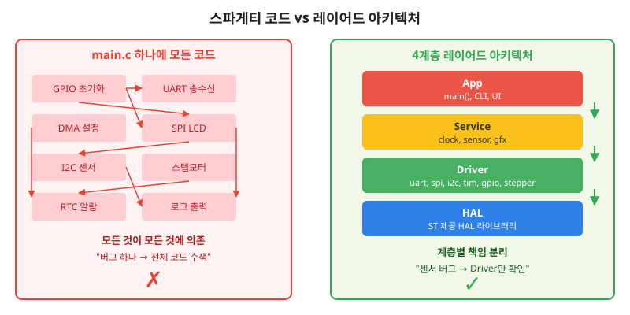
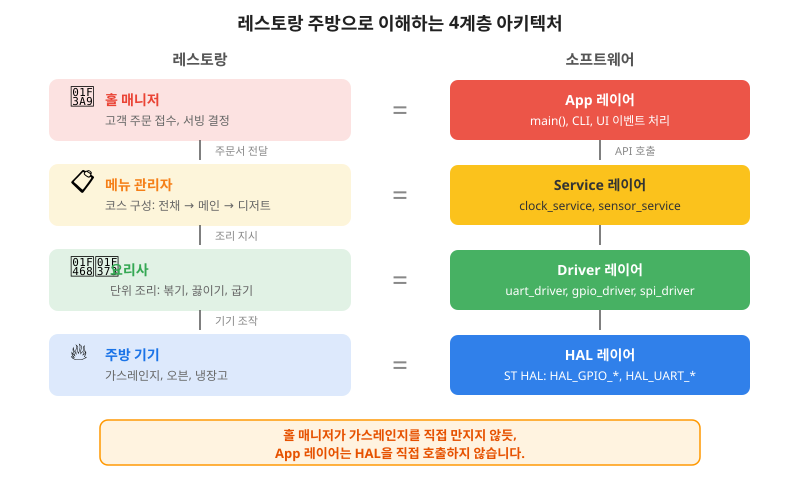
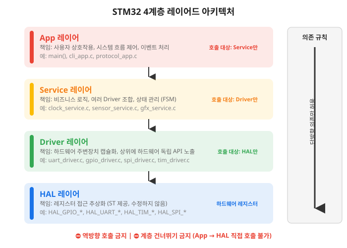
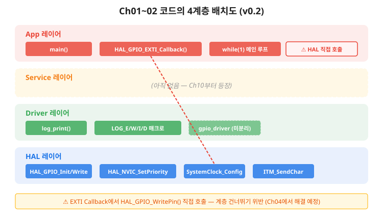
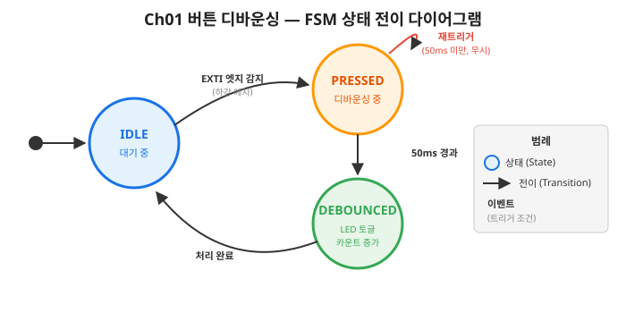
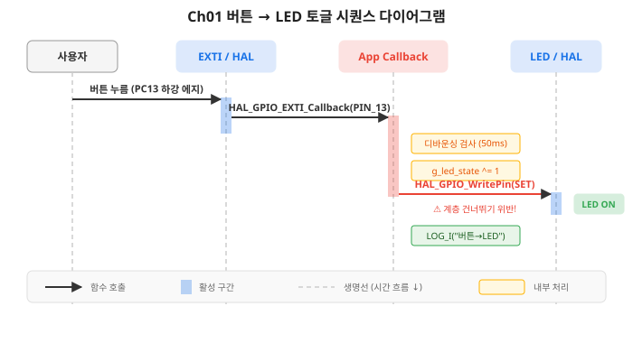
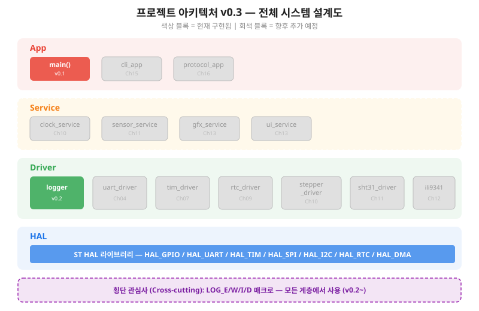

코드가 1000줄을 넘기 전에 설계도를 그린다 — HAL/Driver/Service/App 4계층 구조로 프로젝트의 뼈대를 세운다
이 챕터를 완료하면 다음을 할 수 있습니다.
잠깐, 여기까지 온 여러분을 축하합니다.
Ch01에서 버튼으로 LED를 토글하고, Ch02에서 LOG_I 매크로로 MCU 내부를 들여다보는 데 성공했습니다.
GPIO와 인터럽트, 로그 시스템이라는 임베디드 개발의 기초 체력을 갖춘 것입니다.
이제 그 체력 위에 설계도를 세울 차례입니다.
Ch02를 마치고 프로젝트 폴더를 열어보세요.
main.c 한 파일에 GPIO 초기화, 인터럽트 콜백, 로그 매크로, SWO 설정 코드가 전부 들어 있습니다.
지금은 200줄이니 괜찮습니다.
하지만 이 교재를 Ch19까지 마치면 프로젝트에는 UART, DMA, 타이머, SPI, I2C, LCD, 스텝모터, CLI, PC 대시보드 코드가 추가됩니다.
약 3,000줄입니다.
지금 구조를 잡지 않으면 어떻게 될까요? 3분만 투자해서 미래를 미리 엿보겠습니다.
아래 코드는 아키텍처 없이 Ch10(v1.0)까지의 모든 기능을 main.c 하나에 넣었을 때의 모습입니다.
실제 빌드하지 않아도 됩니다. 눈으로 훑어보기만 하세요.
/* 아키텍처 없이 Ch10까지 확장한 main() — 안티패턴 */
while (1)
{
uint32_t now = HAL_GetTick();
/* 1초마다 센서 읽기 — 20ms 블로킹! */
if (now - last_sensor >= 1000) {
sht31_read(&g_temperature, &g_humidity);
/* ↑ I2C 폴링 20ms 동안 CPU 정지 */
}
/* 500ms마다 LCD 갱신 — 40ms 소요 */
if (now - last_lcd >= 500) {
lcd_send_command(0x2C);
/* SPI 전송 중 다른 작업 불가 */
}
/* 스텝모터 — 1ms 정밀 타이밍 필요! */
if (g_motor_position != g_motor_target) {
stepper_one_step(dir);
HAL_Delay(1);
/* ↑ 센서 20ms + LCD 40ms 블로킹이면
* 실제 간격은 61ms. 시침이 떨린다! */
}
}
sht31_read()가 I2C 폴링으로 20ms 동안 CPU를 잡고 있으면,
스텝모터의 1ms 타이밍을 놓칩니다.
시침이 떨리는 시계를 만들고 싶으신 분은 이 구조로 진행하시면 됩니다.
이제 더 근본적인 질문을 해보겠습니다.
"이 코드에서 센서 값이 틀려요"라는 버그 리포트가 왔습니다.
어디부터 보시겠습니까?
sht31_read()? I2C 초기화? SPI가 같은 GPIO 핀을 점유?
타이머 인터럽트가 I2C 통신 도중에 끼어든 건 아닌지?
답은: 3,000줄 전체를 수색해야 합니다.

4계층 아키텍처를 적용하면, 센서 문제는 Driver 레이어의 sht31_driver.c 200줄만 확인하면 됩니다.
3,000줄을 뒤지는 대신 200줄만 보면 됩니다.
아키텍처는 이론이 아닙니다. 여러분이 야근하지 않기 위한 기술입니다.
§3.1에서 스파게티 코드의 문제를 체감했습니다. 해결책은 레이어드 아키텍처(Layered Architecture, 계층형 아키텍처)입니다. 코드를 역할에 따라 4개 층으로 나누고, 각 층이 바로 아래 층만 사용하도록 제한하는 구조입니다.

이 교재에서 사용하는 4계층의 정확한 정의입니다. 이 구조는 Ch04부터 Ch19까지 일관되게 적용됩니다.
HAL
Hardware Abstraction Layer(하드웨어 추상화 계층) — ST가 제공하는 라이브러리입니다.
HAL_GPIO_WritePin(), HAL_UART_Transmit() 같은 함수로 레지스터 직접 접근을 추상화합니다.
이 계층은 우리가 수정하지 않습니다. CubeMX가 생성하고 ST가 유지보수합니다.
Driver
드라이버 계층 — 특정 하드웨어 주변장치를 HAL 위에서 감싸는 모듈입니다.
uart_driver.c, gpio_driver.c 처럼 주변장치별로 파일을 분리합니다.
상위 레이어에 하드웨어 독립적인 인터페이스를 노출합니다.
예를 들어 led_driver_toggle()을 호출하면 되지, GPIOA나 GPIO_PIN_5를 알 필요가 없습니다.
Service
서비스 계층 — 여러 Driver를 조합하여 의미 있는 기능 단위를 구성합니다.
clock_service.c는 RTC Driver + 스텝모터 Driver를 조합하여 "시계" 기능을 완성합니다.
비즈니스 로직(상태 관리, 알고리즘)이 이 계층에 위치합니다.
HAL을 직접 호출하지 않으며, Driver만 사용합니다.
App
애플리케이션 계층 — 최상위 레이어입니다.
main() 함수, CLI 명령어 처리, UI 화면 전환 등 사용자와 직접 상호작용하는 코드가 여기에 있습니다.
Service에게 "주문서(API 호출)"를 전달할 뿐, 주방 내부(Driver, HAL)를 모릅니다.

레이어드 아키텍처의 가장 중요한 규칙은 단방향 의존입니다.
App → Service → Driver → HAL 방향으로만 호출할 수 있습니다. 역방향(HAL → Driver → Service → App)으로 호출하는 것은 금지입니다. 계층을 건너뛰는 것(App → HAL 직접 호출)도 금지입니다.
왜 이 규칙이 중요할까요?
UART_Send() 인터페이스가 동일하면 Service 이상의 코드는 한 줄도 수정할 필요가 없습니다.sht31_driver.c만 확인합니다. App 코드를 볼 필요가 없습니다.각 레이어가 상위 레이어에 노출하는 함수 시그니처를 인터페이스(Interface, 접점)라고 합니다. 레스토랑 비유에서 "메뉴판"이 인터페이스입니다. 홀 매니저(App)는 메뉴판(인터페이스)만 보고 주문하면 됩니다. 레시피(구현)를 알 필요가 없습니다.
인터페이스는 .h 헤더 파일에 선언하고, 구현은 .c 파일에 숨깁니다.
지금 바로 LED Driver의 인터페이스를 설계해 보겠습니다.
/* led_driver.h — LED Driver 인터페이스 (주문서) */
typedef enum { LED_OFF = 0, LED_ON = 1 } led_state_t;
void led_driver_init(void); /* LED GPIO 초기화 */
void led_driver_set(led_state_t s); /* LED 켜기/끄기 */
void led_driver_toggle(void); /* LED 토글 */
/* App은 이 3개 함수만 알면 된다.
* GPIOA, GPIO_PIN_5 같은 하드웨어 정보를 모른다.
* → 핀이 PA5에서 PB0로 바뀌어도 App 코드는 수정 불필요! *//* button_driver.h — Button Driver 인터페이스 */
typedef void (*button_callback_t)(void);
void button_driver_init(button_callback_t on_press);
uint32_t button_driver_get_press_count(void);
/* 디바운싱은 Driver 내부에서 처리한다.
* App은 "유효한 누름"만 콜백으로 받는다.
* → 디바운싱 시간을 50ms에서 100ms로 바꿔도 App은 모른다. */4계층의 정의를 배웠으니, 이제 여러분이 직접 작성한 코드를 분류해 보겠습니다. Ch01~02에서 만든 v0.2 코드의 각 요소가 어느 레이어에 속하는지 판단하는 실습입니다.
아래 표의 "내 답" 칸을 먼저 채운 후, 해설을 확인하세요. 정답이 하나가 아닌 경우도 있습니다. 고민하는 과정 자체가 아키텍처 설계입니다.
| 코드 요소 | 출처 | 내 답 | 정답 |
|---|---|---|---|
HAL_GPIO_Init() |
ST HAL 라이브러리 | HAL | |
HAL_GPIO_WritePin() |
ST HAL 라이브러리 | HAL | |
MX_GPIO_Init() |
CubeMX 자동 생성 | Driver 후보 | |
log_print() |
Ch02 직접 구현 | Driver | |
LOG_I() 매크로 |
Ch02 직접 구현 | 횡단 관심사 | |
HAL_GPIO_EXTI_Callback() |
Ch01 직접 구현 | App | |
main() |
직접 구현 | App |
MX_GPIO_Init()을 HAL로 분류하셨나요, Driver로 분류하셨나요?
CubeMX가 자동 생성한 코드이니 HAL 같지만, 프로젝트별 핀 설정을 포함하므로 Driver 초기화에 가깝습니다.
이런 경계선의 애매함이 정상입니다. 중요한 것은 "이 코드는 어디에 속할까?"를 고민하는 습관입니다.
HAL_GPIO_EXTI_Callback()은 어떤가요?
HAL이 __weak로 선언한 함수를 우리가 오버라이드했습니다.
"HAL에서 호출하니까 HAL 아닌가?"라고 생각할 수 있지만,
함수의 구현 내용이 App 로직(LED 토글, 카운트 증가)이므로 App 레이어입니다.
향후에는 Driver가 1차로 인터럽트를 수신하고, App에 이벤트를 전달하는 구조로 발전합니다.
v0.2 코드에서 아키텍처 위반을 하나 찾아보세요. 힌트: HAL_GPIO_EXTI_Callback() 내부입니다.
/* v0.2 — HAL_GPIO_EXTI_Callback 내부 */
void HAL_GPIO_EXTI_Callback(uint16_t GPIO_Pin)
{
/* ... 디바운싱 처리 ... */
g_led_state ^= 1U;
/* ⚠️ App 레이어에서 HAL 직접 호출! (계층 건너뛰기) */
HAL_GPIO_WritePin(GPIOA, GPIO_PIN_5,
g_led_state ? GPIO_PIN_SET : GPIO_PIN_RESET);
/* 이상적인 코드: */
/* led_driver_toggle(); ← Driver API 호출 */
}
HAL_GPIO_EXTI_Callback()은 App 레이어인데,
HAL_GPIO_WritePin()이라는 HAL 함수를 직접 호출합니다.
App → HAL 직접 호출이므로 계층 건너뛰기 위반입니다.
이상적으로는 led_driver_toggle()이라는 Driver API를 호출해야 합니다.
하지만 아직 led_driver가 없으니 직접 호출할 수밖에 없었습니다.
이 위반은 의도적입니다. Ch04부터 Driver를 하나씩 만들면서 자연스럽게 해결됩니다.

레이어드 아키텍처가 코드를 "공간적으로" 나누는 도구라면, FSM(Finite State Machine, 유한 상태 머신)은 코드를 "시간적으로" 나누는 도구입니다. 시스템이 어떤 "상태"에 있고, 어떤 "이벤트"가 발생하면 다른 "상태"로 전이하는지를 명시적으로 정의합니다.
이 절에서는 FSM의 기본 개념만 소개합니다. 실제로 FSM 코드를 작성하는 것은 Ch08(스톱워치)에서 처음 수행합니다. 지금은 "이런 도구가 있구나"를 알고, 기존 코드에서 FSM 패턴을 발견하는 눈을 기르는 것이 목표입니다.
Ch01에서 버튼 디바운싱 코드를 작성할 때, if (now - last >= 50ms) 패턴을 사용했습니다.
이 코드를 FSM 관점으로 다시 보면:
if-else로 구현했지만, 본질은 FSM입니다.
상태를 명시적으로 enum으로 선언하지 않았을 뿐, "상태에 따라 다르게 동작하는" 패턴은 이미 사용하고 있었습니다.

이 다이어그램을 읽는 방법:
Ch08(스톱워치)에서는 IDLE / RUNNING / PAUSED / RESET 4개 상태를 가진 FSM을 직접 코드로 구현합니다. 지금은 위 다이어그램을 "읽을 수 있으면" 충분합니다.
이제 이 교재의 핵심 산출물을 만들 시간입니다. Ch01~02에서 구현한 코드를 4계층에 배치하고, Ch04~Ch16에서 추가될 컴포넌트를 미리 표시한 프로젝트 아키텍처 설계도 v0.3을 작성합니다.
이 설계도는 "살아있는 문서"입니다.
Ch04에서 uart_driver를 만들면 회색 블록이 초록색으로 바뀝니다.
Ch10에서 clock_service를 만들면 노란 블록이 추가됩니다.
매 챕터의 도입부에서 이 설계도를 갱신하며 시스템이 성장하는 과정을 직접 체험합니다.
아키텍처 설계도를 그리기 전에, 컴포넌트 간 메시지 흐름을 표현하는 시퀀스 다이어그램(Sequence Diagram, 순서 다이어그램)을 소개합니다. Ch01의 버튼 → LED 토글 흐름을 시퀀스로 표현하면 이렇습니다:

시퀀스 다이어그램을 읽는 방법:
Ch04부터는 이 시퀀스 다이어그램을 직접 작성하게 됩니다. 지금은 "읽을 수 있으면" 충분합니다.
아래 다이어그램이 이 교재의 전체 아키텍처 설계도입니다. 색칠된 블록은 현재(v0.3) 구현 완료된 컴포넌트, 회색 블록은 향후 챕터에서 추가될 컴포넌트입니다.

현재(v0.3) 상태:
main() — 초기화 + 메인 루프 + EXTI 콜백logger — LOG_E/W/I/D 매크로 + SWO/RTT 출력다음 챕터(Ch04)에서 추가될 것:
uart_driver — 시리얼 통신, UART_Send() 인터페이스아키텍처의 실전 가치는 디버깅에서 빛납니다. 버그 증상을 보고 어느 레이어를 먼저 확인할지 판단하는 가이드입니다.
| 증상 | 의심 레이어 | 확인 방법 |
|---|---|---|
| 전송 자체가 시작 안 됨 | HAL | 레지스터 값, 클럭 활성화, 핀 설정 확인 |
| 전송은 되지만 데이터가 깨짐 | Driver | 버퍼 주소, 크기, 정렬(Alignment) 확인 |
| 데이터 정상이지만 타이밍 맞지 않음 | Service | 콜백 처리 순서, 상태 전이 확인 |
| 화면 표시 값이 이상함 | App | 데이터 변환, 포맷 로직 확인 |
목표: Ch01~02 코드를 4계층에 배치하고, 향후 컴포넌트를 포함한 아키텍처 설계도를 완성한다.
환경: 종이/화이트보드 또는 그림 도구
가로로 긴 직사각형 4개를 위에서 아래로 그립니다. 위에서부터 App, Service, Driver, HAL 순서입니다. 각 레이어에 색상을 지정합니다(빨강, 노랑, 초록, 파랑).
v0.2에서 구현된 컴포넌트를 해당 레이어에 배치합니다:
main() 블록logger 블록HAL_GPIO, HAL_NVIC 블록TABLE_OF_CONTENTS.md를 참고하여 향후 추가될 컴포넌트를 회색으로 미리 배치합니다:
App → Service → Driver → HAL 방향으로만 화살표를 그립니다. 횡단 관심사(Logger)는 점선으로 모든 레이어에 연결합니다.
예상 결과: 그림 03-6과 유사한 설계도가 완성됩니다.
이 챕터에서 프로젝트 아키텍처 설계도 v0.3이 작성되었습니다.
현재 구현된 컴포넌트: main()(App), logger(Driver), ST HAL(HAL).
Ch04부터 매 챕터 도입부에서 이 설계도에 새 컴포넌트를 추가합니다.
HAL_GPIO_WritePin(), led_driver_toggle(), LOG_I(), main() 루프를 각각 어느 레이어에 매핑하시오. LOG_I()가 특정 레이어에 속하지 않는 이유를 설명하시오.
/* cli_app.c — App 레이어 */
void cli_handle_command(const char *cmd)
{
if (strcmp(cmd, "led on") == 0) {
HAL_GPIO_WritePin(GPIOA, GPIO_PIN_5, GPIO_PIN_SET);
}
}